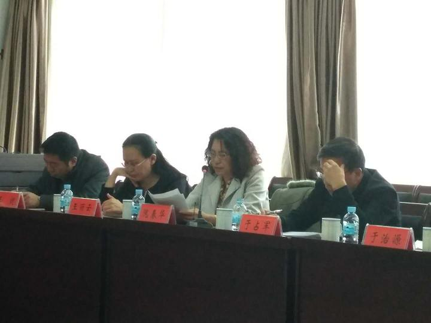

11月22日下午，赤峰市党外人士学习贯彻十九大精神座谈会召开。市委常委、统战部部长苏雅勒其其格主持座谈会并讲话。全市各民主党派骨干成员、非公有制经济代表人士、市党外知识分子代表人士、新的社会阶层人士代表、民族宗教界代表人士、归侨侨眷代表，以及市委统战部、侨联有关负责同志近50人参加座谈会。


座谈中，农工党赤峰市副主委隗春华及其他民主党派及党外人士代表，分别就各界别学习贯彻十九大精神组织开展情况、学习心得和体会，以及下一步贯彻落实意见建议进行了交流研讨，一致表示坚决拥护中国共产党的领导，维护习近平总书记的核心地位，进一步深入学习宣传好习近平新时代中国特色社会主义思想，并结合各自实际贯彻到各项工作中去。
苏雅勒其其格充分肯定了各界别人士学习贯彻情况。她希望，全市统一战线成员切实把学习宣传贯彻中共十九大精神作为当前和今后一个时期首要政治任务，按照自治区党委要求和市委部署，迅速掀起学习宣传热潮。要坚持用习近平新时代中国特色社会主义思想武装头脑，牢固树立共同思想政治基础。要扎实开展主题教育，强化树立“四个意识”，不断坚定“四个自信”，切实用十九大精神指导实践，推动十九大精神在全市统一战线落地生根、开花结果。要切实提高政治站位，不忘合作初心、牢记政治使命、继续携手前进，积极投身新时代中国特色社会主义伟大实践，为贯彻落实十九大的各项决策部署、推动赤峰市跨越崛起献计出力。
附：中国农工民主党赤峰市委员会副主任委员隗春华《开创新方法 履行新职能》发言稿
开创新方法 履行新职能
党的十九大是一个催人奋进的大会，习近平总书记在报告中提出了许多新观点、新举措，具有很强的政治性、思想性、指导性，是统一全党思想认识、带领全国各族人民夺取全面建设小康社会新胜利、开创中国特色社会主义新局面的纲领性文件。
农工党市委会为了更好的学习宣传贯彻好中共十九大精神，通过下发学习通知、分期召开不同层面党员参加的学习会议、制定下一步工作学习计划等措施开展了系列活动，下面分别做一简要介绍：
一、先后组织了三次集中学习，统一思想，提高站位。
第一次：十九大于10月18日召开，开幕会结束后10月19日下午，农工党召开了全委扩大会议，会议由市委主委、赤峰市政府副市长李艳茹主持。会上学习了习近平总书记在中共十九大开幕式上所作的题目为《决胜全面建成小康社会，夺取新时代中国特色社会主义伟大胜利》的报告。全体市委委员表示，习主席报告实事求是、高屋建瓴、振奋人心、鼓舞士气，提出很多新思想、新观点、新方法，我们一定学习好、落实好、贯彻好十九大会议精神，带领广大党员把思想统一到中共中央的部署中来，为全面建成小康社会、为实现中华民族的伟大复兴作出新的更大贡献。
第二次：10月28日，市委员会组织退休老党员36人参加的学习十九大报告的座谈会。会议上传达了习总书记在十九大上所作的工作报告以及农工党中央主席陈竺现场聆听习总书记报告的感受。会议上老党员们畅所欲言，分享了各自的切身体会和对会议精神的理解和把握。他们谈到：“党的十八大以来，以习近平同志为核心的党中央带领全国人民，锐意进取，改革创新，在反腐、经济建设、科技、军事等方面成绩斐然，在许多领域正在逐步缩小与美国等西方发达国家的差距”、“事实证明，中国共产党是一个有希望、有信仰、有传统的政党，完全有能力带领全国人民实现“两个一百年”的奋斗目标”、他们还谈到“十九大的报告，鼓舞人心、振奋士气，提出很多新思想、新观点、新方法，必将带领中国迈向更高台阶——走向美丽、繁荣、富强”。
广大老党员们纷纷表示：通过学习，进一步坚定政治立场站位，把思想统一到习总书记讲话精神上来，不忘初心，充分发挥丰富的政治智慧、工作经验、人生阅历和强烈的爱党忧党、为党护党情怀，运用好“畅谈建言”这个平台，为实现中华民族伟大复兴梦、为农工党事业的不断发展壮大奉献智慧。 第三次：召开基层班子成员参加的学习会议。
11月4日下午，召开了由市委委员、总支及各支部委员参加的传达学习贯彻中共十九大精神会议，会议由李艳茹主委主持。
本次会议邀请党的十九大代表王秀芝同志做了题为《时代开启新征程的报告》。王秀芝结合本职工作，以党的十九大代表的亲身经历，就大会的主题、十个历史性成就、两个重大判断、一个历史使命和四个伟大、一个重要思想及其意义、九个方面任务部署和政策指导、大会盛况等内容，进行了详细全面、深入浅出、通俗易懂的解读。与会人员一致表示，通过学习，充分认识了中共十九大的深远意义，深刻领会了中共十九大会议精神实质和丰富内涵，深受教育、深受启发、深受鼓舞、深受鞭策，进一步坚定了在中国共产党的领导下， 牢记不忘合作初心、继续携手前进、为建设亮丽内蒙古、共圆伟大中国梦、在赤峰跨越发展征程中再立新功的决心。
李艳茹主委在总结讲话时强调，农工党赤峰市委要把学习十九大报告作为当前和今后一个时期的重要政治任务，组织引领全体党员迅速掀起学习宣传贯彻热潮。一是全面准确学习中共十九大精神，要原原本本学，原汁原味学、带着问题学、联系实际学。二是紧密围绕中共十九大确定的目标任务，认真履职尽责，特别是借助农工党在医药卫生、人口资源、生态环境等领域的联系界别优势发挥作用。三是以执政党为师，不断加强自身建设，提高履职能力，做好参政议政工作，努力把自己培养成适应新时代要求的农工党党员。
二、市委会下发了《关于各个基层组织认真开展学习十九大精神的通知》，掀起学习热潮。市委会下辖9个基层组织，通知要求各个支部委员会组织引领全体党员迅速掀起学习贯彻热潮。要坚持以党的十九大精神为指引，用习总书记新时代中国特色社会主义思想武装头脑，进一步坚定立场，为党和国家加油鼓劲，为事业发展点赞喝彩，为工作大局凝心聚力。扮演好中国特色社会主义参政党的角色，更好地履行参政议政的职能，为全面建成小康、为实现中华民族的伟大复兴作出新的更大贡献。各个基层组织按照通知要求纷纷组织了学习会议。
三、制定了今后学习工作的新举措：习近平在报告中开启了国发展的新征程，注入了实现中国梦的新动能。新，是定位，是方向，是策略，也是要求，它要求我们民主党派在履职中要有新意，要出新招，以开创民主党派履职新局面、新气象。为此市委会经过讨论协商，制定了今后工作和学习中要坚持的“四新”原则：
1、坚持新理念。十九大报告提出，中国共产党人的初心和使命，就是为中国人民谋幸福，为中华民族谋复兴。民主党派与中国共产党休戚与共，中国共产党的初心和使命，也就是我们的初衷和责任，我们农工党履职就以此为核心理念。
2、履职新视觉。十九大报告提出“为把我国建设成为富强民主文明和谐美丽的社会主义现代化强国而奋斗”，这也是民主党派履职的新视觉，特别是在“美丽”二字上，我们农工党将努力发挥更大作用。
3、开创新方法。十九大报告指出，我国社会的主要矛盾是“人民日益增长的美好生活的需要和不平衡不充分的发展之间的矛盾”。我们农工党的履职就是要为尽快和有效化解这一矛盾提出好建议，找到新方法。
4、创造新高度。十九大报告提出了新时代中国特色社会主义发展两个阶段的战略，我们农工党履职就是要围绕这两个阶段的战略来建言献策、尽职尽责，履职要有策略宽度，更要有战略高度。
五、学习一点体会：习总书记报告中关于巩固和发展爱国统一战线的论述、关于“坚持长期共存、互相监督、肝胆相照、荣辱与共，支持民主党派按照中国特色社会主义参政党要求更好履行职能”声音，让我们广大农工党党员备受鼓舞，也倍感压力。农工党市委会将以刚刚提到的“四新”原则为指引，带领广大农工党员把学习十九大精神与发挥农工党独特优势结合起来，与履行参政党职责结合起来，与加强自身建设结合起来，充分调动广大党员的积极性和创造性，履职尽责，为实现伟大中国梦做出积极贡献。